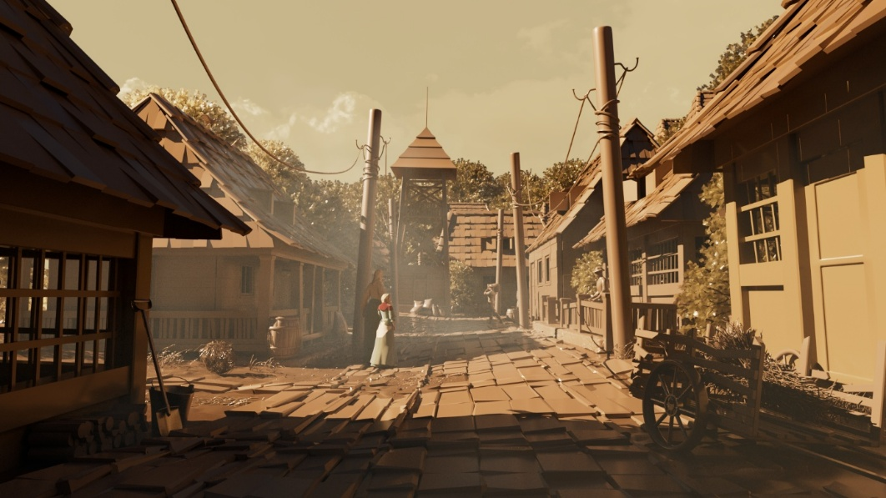
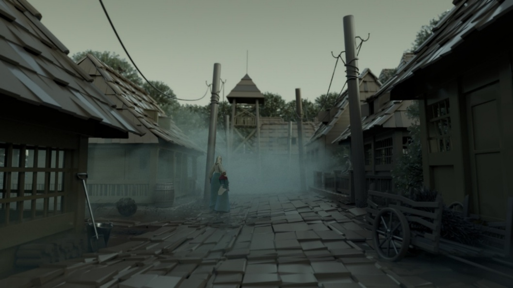
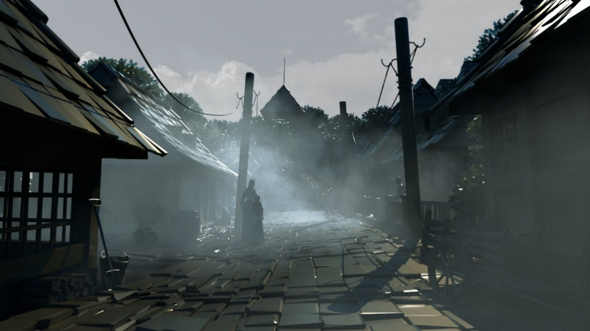
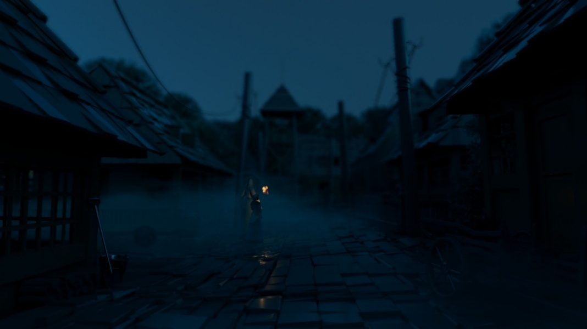
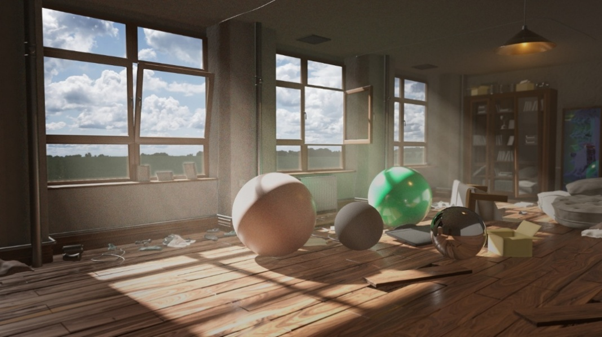
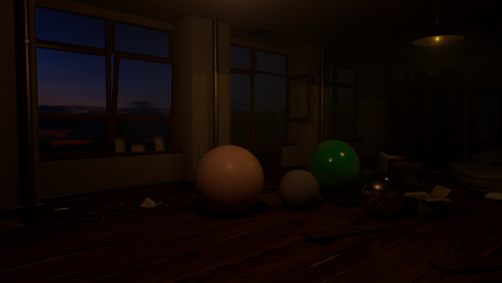
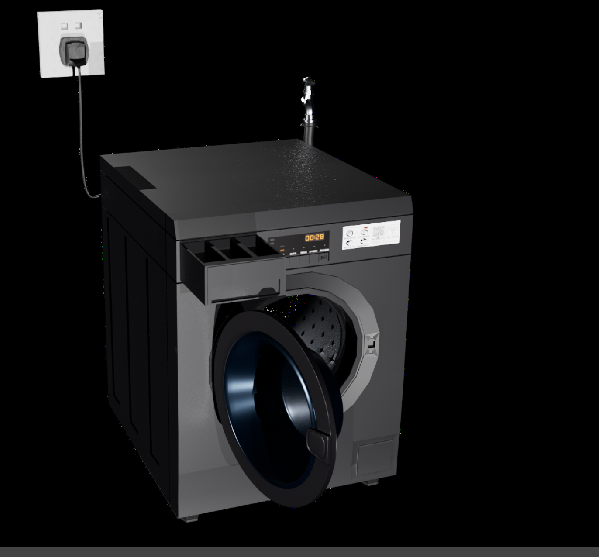
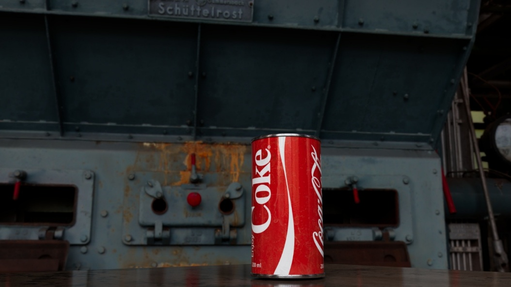
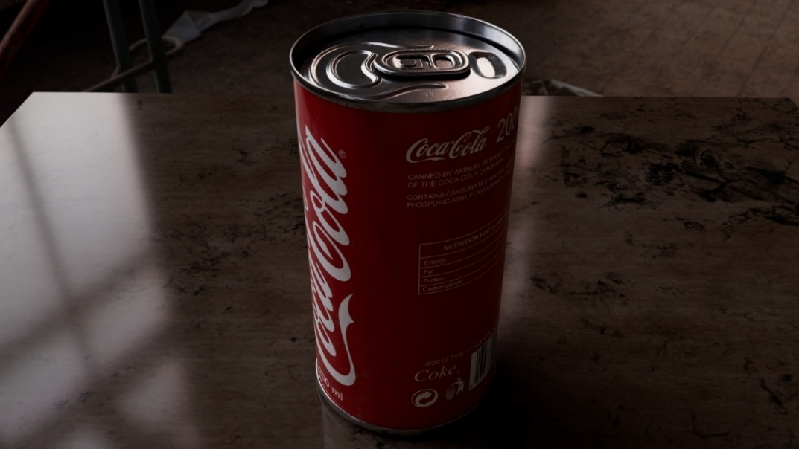

LIGHT · MATERIAL · ATMOSPHERE
LIGHTING
LIGHTING
& RENDERING
STUDIES
A collection of studies exploring light, material, atmosphere and rendering.

SELECTED STUDIESLIGHT · MATERIAL · RENDER








MORE STUDIESSELECTED ARCHIVE